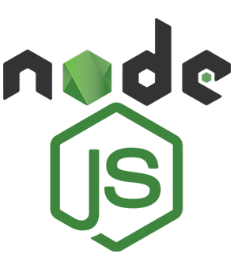
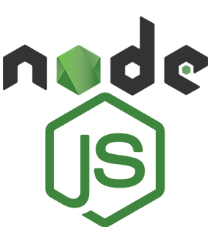
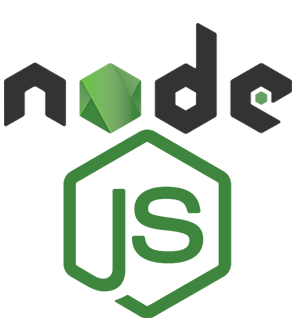

SKILLS


INTERESTS

 

HI GUYS! I'm an Artist, Dancer and a ComputerScience Engineering Student. Most of my painting works are based on landscape,still life objects etc... In the case of dancing, I majored in bharatanatyam and a little bit of mohiniyattam. My aim as a computer science engineer is to pioneer technology improvements that directly address significant global concerns. I want to use my computer science abilities to provide innovative solutions to real-world challenges in healthcare, environmental protection, and education. I believe in the power of cooperation, and I value varied viewpoints and teamwork in order to develop effective solutions. Continuous learning is essential; I'm devoted to remaining up to date on the latest trends and technology, and I'm embarking on a lifelong learning adventure.
Completed Elementary and Junior High School about 10 years ago from Indian School Darsait,Muscat,Sultanate of Oman.
Completed High School about 6 years ago from Janashakthi Public School,Velanchira,Alappuzha under central board of secondary education (CBSE).
Completed Higher Secondary about 4 years ago from St.Johns HSS,Mattom.
Now, Pursuing BTECH in CSE from Sreebuddha College of Engineering,Pattoor.

Participated in SheHacks conducted by TinkerHub Women In Tech,
and was able to build a project in Python from scratch and deploy it
successfully in 14 days.
Participated in Tink-Her-Hack, Kerala's Largest Women Only
Hackathon organized by Women In Tech wing of TinkerHub
Foundation and build a WhatsApp parser app.
It is designed to analyze the curriculum vitae (CV) of a job applicant
and predict their personality traits based on the information provided
in their CV and using machine learning algorithms and Big5 model.